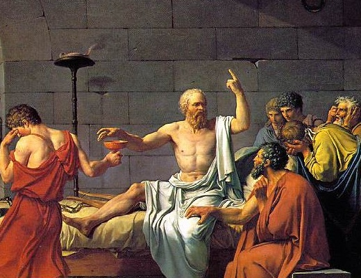

[그리스의 철학자 소크라테스]
"배부른 돼지보다 배고픈 소크라테스가 되는게 낫다"
100여년전 영국의 철학자 존 스튜어트 밀이 했던 말이다.
사람들은 흔히 이 말을 (배부른) && (돼지) 와 (배고픈) && (소크라테스) 의 양자택일로 생각한다. (&& 는 And 기호이다) 즉, 4가지 조건으로 보는 것이다. 그래서 혹자는 조건들을 다시 조합해서 "나는 배부른 소크라테스가 되고 싶다" 라고 말하기도 한다.
하지만 내 친구 조군의 생각은 다르다.
"배부르면 누구나 돼지가 되고 배고프면 누구나 소크라테스가 되는거야"
조군의 말에 따르면 비교 조건은 단 두가지. (배고픈) 과 (배부른) 뿐이다. (돼지) 와 (소크라테스)는 단지 선택에 따르는 결과일 뿐인 것이다.
뭔가 그럴싸하다고 생각되지 않는가?